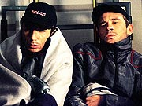
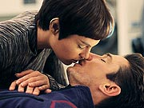
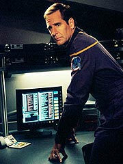
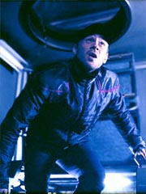
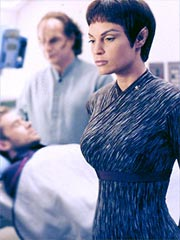

Episdio
anterior | Prximo
episdio
Sinopse:
Malcolm Reed e Charles Tucker esto
em um shuttlepod, fazendo o reconhecimento de um campo de asterides.
Os sensores sofrem uma pane total, e a misso acaba se tornando
intil. A Enterprise s deve aparecer para buscar a dupla em trs
dias, e nada resta aos dois seno tentar efetuar os reparos nos
sensores e jogar conversa fora.
Tudo muda, entretanto, quando Reed observa alguns destroos na
superfcie de um dos maiores asterides. Eles chegam mais perto
para tentar fazer alguma identificao visual, quando avistam
uma placa entre os pedaos espalhados com a inscrio "NX-01".
Eles logo concluem que a Enterprise foi destruda acidentalmente
em um choque com um asteride.

Apenas com os
motores de impulso do shuttlepod, no h esperana de chegar a
nenhum lugar que possa fornecer socorro. Reed comea a pensar que
esto condenados morte, que deve chegar assim que o ar da nave
terminar, em nove dias. Tucker est mais otimista. Os dois tm
um atrito quando o engenheiro ordena que Reed, sem sensores,
marque um curso at Echo-3, o ltimo satlite de comunicao
subespacial que eles deixaram no espao enquanto a bordo da
Enterprise --mesmo que leve anos at que a nave sem propulso de
dobra chegue l.
Abalado com a perspectiva de sua prpria morte, Reed comea a
fazer registros frenticos em seu dirio sobre os eventos que
antecederam sua morte, para que as informaes estivessem disponveis
s prximas geraes. Ele tambm passa a escrever cartas para
seus entes queridos. Trip, que est tentando manter a calma e
descansar, fica furioso com a atitude paranica de Reed, e ordena
que ele pare --os dois quase saem no tapa.
O clima de tenso permanece conforme o tempo vai passando, e s
piora depois que a nave sofre nova avaria, com mltiplos furos no
casco, que esto deixando a atmosfera escapar. Depois que os
vazamentos so contidos, sobram apenas dois dias de ar. Diante da
cada vez mais prxima perspectiva da morte, os dois comeam a
romper o clima de hostilidade e decidem beber juntos, depois de
reduzirem a temperatura da nave ao mximo para conservar oxignio.

Durante
seus ltimos momentos, Reed e Trip descobrem vrias coisas um do
outro. Por exemplo, eles j tiveram em comum a mesma namorada,
Ruby, de San Francisco. Reed revela que considera a tripulao
da Enterprise mais prxima dele que sua prpria famlia, e
conta que tem uma queda pela sub-comandante T'Pol.
Os dois j aceitam seu destino, quando, do nada, a Enterprise
entra em contato. Eles so incapazes de responder, mas recebem a
mensagem de Hoshi, indicando novo ponto de reencontro, em dois
dias. Infelizmente, eles no tm oxignio suficiente para
esperar at l.
Em uma atitude de desespero, Trip decide abandonar a nave e
morrer, para que Malcolm tivesse mais chance de viver at a
chegada da Enterprise, sendo o nico ser respirante a bordo. O
oficial de armamentos, entretanto, no aceita o sacrifcio do
engenheiro, chegando at a amea-lo com uma pistola de fase.
Por fim, os dois concordam que a nica coisa a fazer ejetar
seu motor e induzir uma sobrecarga, produzindo uma exploso que
talvez chame a ateno da Enterprise, que ento aumentaria sua
velocidade para resgat-los. O truque d certo, e os dois so
resgatados, inconscientes.

Na verdade, a
Enterprise no havia sido destruda em nenhum momento, mas
apenas danificada, aps o choque de uma nave Tesniana. O impacto
arrancou a porta da baa de shuttles, que foi justamente o que
Reed e Trip viram no asteride. Os outros restos eram da nave
aliengena, que havia sido irremediavelmente danificada pelo
mesmo fenmeno que causou a pane nos sensores e os vazamentos a
bordo do Shuttlepod Um --micro-singularidades (buracos negros do
tamanho de tomos), um fenmeno nunca antes observado, mas
firmemente sustentado por fsicos tericos Vulcanos.
Comentrios:
Para um episdio escrito por Rick Berman e Brannon
Braga, "Shuttlepod One" tem vrias coisas
impressionantes. Primeiro, fortemente orientado a personagem,
uma coisa que a dupla no costuma fazer muito. O enfoque da histria,
no caso, nem um personagem do grande trio, mas o at ento
pouco conhecido tenente Reed.
Tucker at aparece um bocado, mas o drama e as revelaes ficam
majoritariamente por conta do oficial de armamentos, o grande
beneficiado pelo segmento. Temos a chance de descobrir
verdadeiramente a personalidade de Malcolm, de forma muito mais
intensa do que a mera histria secundria de "Silent
Enemy" ("o que Malcolm gosta de comer?").
Vivemos aqui toda a angstia de Reed, sua tristeza, sua introverso,
seus sentimentos para com a tripulao da Enterprise e seu
lamento por nunca ter se aberto com seus entes queridos. Sem dvida,
estar beira da morte inspirou o personagem, o que trouxe bons
resultados ao episdio.

Claro,
nem s de revelaes viveu Malcolm. Todo o roteiro foi
abrilhantado por uma espetacular atuao de Dominic Keating.
Trinneer vai bem, mas Keating sem dvida garante o centro do
palco, no s pela natureza da histria em si, mas por sua
brilhante interpretao. O momento em que Reed tenta convencer
Trip de que ele no est querendo morrer, mas est somente
reagindo a tudo que est deixando para trs em sua vida,
bastante tocante.
De um lado mais cmico, mais igualmente interessante, ver sua
paixo enrustida pela sub-comandante T'Pol. A frieza e a beleza
da Vulcana certamente tocam fundo no corao do tmido oficial
de armamentos. O jogo entre a cena em que ele sonha ser beijado
por T'Pol e a cena final, em que ele e Trip so resgatados e
levados enfermaria, muito bem feito, um bom uso do desejo
dos produtores de tornar a srie mais "caliente". Resta
saber se Malcolm vai seguir perseguindo sua paixo pela Vulcana,
aps romper essa inrcia, ou se vai voltar a estacionar.
Alis, por falar em paixo, um grande alvio saber que o
beijo de T'Pol em Reed (que nem chega a acontecer) no passou de
uma fantasia do oficial de armamentos. Um envolvimento emocional to
grande por parte de T'Pol no deve ser expressamente proibido,
mas, to no incio da srie, simplesmente iria destruir toda a
credibilidade do personagem.
Mas faltou dizer qual foi a segunda coisa incomum do episdio,
para ser de autoria de Rick e Brannon --ele fortemente
inspirado pela Srie Clssica!
Pois , tem gente que acha que esses dois simplesmente no
suportam o seriado original, mas a referncia a "The
Galileo Seven" muito bvia para ser mera coincidncia.
O isolamento na pequena nave, a perspectiva da morte certa e a ejeo
do motor (ou do combustvel, no episdio clssico) so muita
coisa para que acreditemos que no h uma inspirao por trs
da histria.
Algum pode reclamar que eles esto fazendo o que sempre fazem
--reciclando velhas idias. Nada estaria sendo mais injusto: o
uso dos elementos aqui presta muito mais uma homenagem Srie
Clssica do que se apropria de suas glrias. O mrito de "Shuttlepod
One" est totalmente calcado em outros elementos
(leia-se, o desenvolvimento de Malcolm Reed enquanto personagem
tridimensional), e o uso das referncias clssicas s serve
para conquistar a simpatia da audincia. Boas escolhas, sem dvida.
O episdio recheado de dilogos bem escritos e no cansa a
audincia, apesar de ser praticamente inteiro filmado em um
claustrofbico shuttlepod. Em certo momento, h uma pequena
sensao de repetio exaustiva, com Reed ditando seus dirios
e Tucker reclamando, mas felizmente o episdio no chega a
empacar, e volta a fluir com suavidade e de forma agradvel e
interessante.

Algumas cenas
chegam mesmo a se destacar, como Tucker e Reed j de porre,
comentando os dotes de T'Pol e ainda esvaziando a garrafa, ou a
cena de abertura do episdio, com o britnico Reed mostrando uma
certa rivalidade para com seus colegas americanos. Um lembrete
interessante de que ainda estamos no sculo 22, e que a
humanidade no to coesa quanto nos sculos seguintes.
Tambm devemos agradecer por termos sido poupados de uma anomalia
temporal ou algum "braguete" do tipo. O enredo foi
conduzido de maneira bem tradicional, o que ajudou o episdio a
se manter slido e se manter dentro da premisso de pr-sequncia
da srie. Outro ponto positivo.
Na verdade, s h uma coisa que realmente se pode criticar sobre
esse episdio: ele de fato no tem histria; 100% interao
de personagens. Se isso pode ser uma grande fora primeira
vista, no parecer do mesmo modo depois da terceira vez que
algum o assiste. Por no ter uma histria particularmente
vibrante, logo que a audincia extrai o contedo sobre os
personagens, no vale a pena revisit-lo.
De toda forma, esse era o nico modo de conceber essa histria e
foi vlido os produtores a fazerem. Apesar dos paralelos com "The
Galileo Seven", trata-se essencialmente de uma novidade
em Jornada --e uma das boas. Esperemos que a equipe de Enterprise
continue assim, conseguindo inovar com qualidade --uma coisa cada
vez mais rara, aps tantos anos e episdios...
Citaes:
Reed - "If
only Dr. Cochrane had been a European. The Vulcans would've been
far less reticent to help us. But, no... he had to be from
Montana."
("Se apenas o dr. Cochrane tivesse sido um europeu. Os
Vulcanos seriam bem menos relutantes em nos ajudar. Mas no...
ele tinha de ser de Montana.")
Reed - "Does
that sound modulated enough for you?"
("Isso parece modulado pra voc?")
Tucker - "Modulated?"
("Modulado?")
Reed - "The radio. Or is it just the galaxy giggling at us
again?"
("O rdio. Ou s a galxia rindo de ns de
novo?")
Tucker - "It can giggle all it wants, but the galaxy's not
getting any of our bourbon."
("Pode rir quanto quiser, mas a galxia no vai ganhar nada
do nosso bourbon.")
Reed - "She's got a nice bum."
("Ela tem um belo traseiro.")
Trivia:
 Rick Berman, um dos autores do episdio, apostou nos personagens.
"H um show em que Brannon [Braga] e eu estamos trabalhando
agora que um episdio forte para Trip e Reed e acho que ir
unir esses dois personagens."
Rick Berman, um dos autores do episdio, apostou nos personagens.
"H um show em que Brannon [Braga] e eu estamos trabalhando
agora que um episdio forte para Trip e Reed e acho que ir
unir esses dois personagens."
Quem falou mais do episdio, entretanto, foi Dominic Keating.
"Tem um episdio vindo a chamado 'Shuttlepod One',
e uma de minhas mais empolgantes e memorveis experincias de
atuao, tanto em palco quanto em cmera. entre mim e Trip,
o engenheiro. Achamos que estamos abandonados sozinhos no espao
no Shuttlepod Um. Voc poderia colocar isso em uma pea de fora
da Broadway e interpretado como um 'ato-nico'. Rick est muito
satisfeito, e ele disse algumas coisas muito congratuladoras sobre
ele ontem."
No foi fcil filmar o episdio, segundo Keating. "Foi bem
duro filmar, porque no episdio ns desligamos o termostato para
conservar oxignio, ento a temperatura cai, e eles construram
um iglu para ns no palco oito e colocaram seis aparelhos de
ar-condicionado l com pacotes de gelo seco, e baixaram a
temperatura para menos que zero, e fizemos trs dias assim. Foi
bem duro."
O resultado, para o ator, valeu a pena. "Esse episdio um
dos melhores trabalhos que j fiz, se posso dizer. Estou
realmente empolgado para ver como sai. Acho que fizemos algo bem
extraordinrio."
Sem atores convidados e filmado totalmente dentro do estdio, "Shuttlepod
One" foi um dos episdios que ajudou a equilibrar o oramento
da srie durante a primeira temporada, que esbanjou dinheiro em
seus primeiros episdios com efeitos especiais.
Ficha
tcnica:
Escrito por Rick Berman &
Brannon Braga
Direo de David Livingston
Exibido em 13/02/2002
Produo: 016